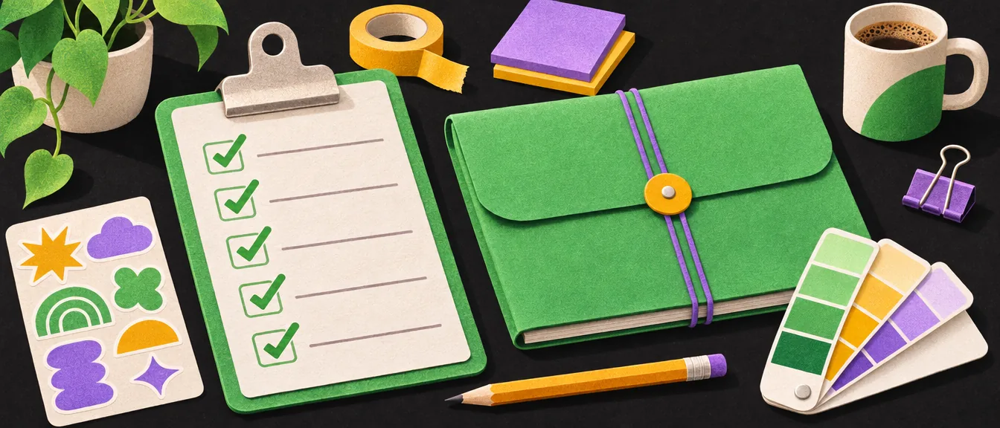
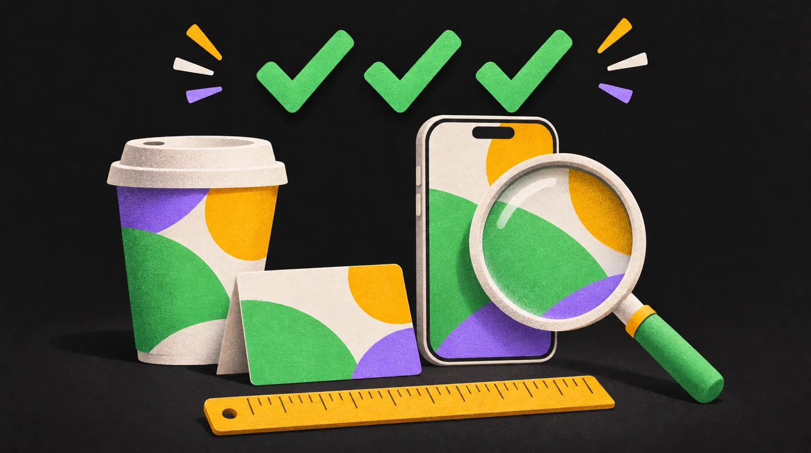

ההגשה: רשימת בדיקה
רשימת הדברים שכדאי שיהיו בפרויקט מיתוג. מה חובה, מה בונוס, ומה נכנס לספר מותג קצר. סמנו תוך כדי עבודה: הסימונים נשמרים בדפדפן שלכם, גם אם סוגרים את הדף.

איך עובדים עם הרשימה
כל סעיף כאן הוא משהו שמרצה (או לקוח) ירצה לראות בהגשה. כשהסעיף מוסבר לעומק בפרק אחר, יש לידו קישור, וכאן נשארת רק השורה לסימון. מתחילים מהסיכום הקצר, ממשיכים לרשימה המלאה, ומסיימים בספר המותג.
רוצים את זה על נייר?רשימת הבדיקה להדפסה: 11 חלקים, עם קובץ PDF להורדה. טובה לתלות ליד המחשב או להביא לפגישת הגשה.סיכום קצר
אם אין זמן לקרוא את כל הרשימה, זה הסיכום הקצר של כל מה שצריך להיות בפרויקט.
המיתוג עצמו
פרסום: חובה!
הרחבות: לא חובה
המיתוג עצמו
- לוגו
- מערכת לוגו מלאה
- צבעים
- טיפוגרפיה
- שפה גרפית
- אייקונים
- מוקאפים
- לוח השראה (יתרון)
פרסום: חובה!
- סושיאל: ריבוע וסטורי
- פוסטרים
- סטורי מונפש
הרחבות: לא חובה
- אנימציות
- מערכת הדמות
- ספר מותג קצר
המיתוג עצמו: שמונה סעיפים, שבעה מהם חובה. לוח ההשראה הוא יתרון.פרסום: שלושה סעיפים, וכולם חובה. בלי פוסטים, פוסטר וסטורי מונפש, ההגשה לא שלמה.הרחבות: שלושה סעיפים, כולם בונוס. זה מה שמבדיל הגשה טובה מהגשה מצוינת.
רשימת דברים שכדאי שיהיו בפרויקט מיתוג
עשרה חלקים, ועוד שלושה דברים אסטרטגיים שמרצים מאוד אוהבים לראות.
1. מערכת הלוגו (Logo System)
לא רק לוגו אחד. צריך להראות:
2. מערכת צבעים (Brand Color System)
להציג גם:
3. טיפוגרפיה
צריך להראות:
היררכיה טיפוגרפית, עם דוגמה חיה
4. שפת גרפיקה (Graphic Language)
לדוגמה:
לא חייבים את כולם: בחרו את מה שבאמת שייך לעולם של המותג, והראו שזה חוזר באותו אופן בכל מקום.
שפה גרפית, עם דוגמה ממותג אמיתי
5. מערכת הדמות (Character System)
אם יש למותג דמות, כדאי להציג:
6. אייקונים (Icon set)
7. דוגמאות שימוש (Mockups)
מאוד חשוב לפרויקט. לדוגמה:
8. סושיאל מדיה
מערכת פוסטים. לדוגמה:
9. תנועה ואנימציה (Motion / Animation)
אפשר להראות:
- קצר: רוב התנועות בממשק לוקחות 200–500 אלפיות שנייה. אנימציית לוגו של פתיחה: שנייה עד שלוש, לא יותר.
- האצה והאטה: תנועה במהירות קבועה מרגישה רובוטית. מה שנכנס, מאט בסוף. מה שיוצא, מאיץ.
- אופי: קפיצי ושובב למותג קליל, רך ואיטי למותג יוקרתי. התנועה היא חלק מהאישיות.
- נגמר: תנועה שמתנגנת שוב ושוב ליד טקסט מפריעה לקרוא. מתנגנת פעם, ונחה. כללי זהב
10. ספר מותג (Brand Guidelines)
ספר מותג קצר. מה בדיוק נכנס אליו, עם רשימת סימון משלו, בהמשך העמוד. ספר מותג
ובונוס אסטרטגי: 3 דברים שמרצים אוהבים
אם אתם עושים את זה לפורטפוליו או לפרויקט לימודי, יש גם 3 דברים שמרצים מאוד אוהבים לראות:
בדיקה אחרונה לפני ההגשה

שבע טעויות שמרצים רואים מקילומטר. כל אחת מהן מוסברת בפרק משלה, כאן רק בודקים:
לא למתוח כללי זהב שחור ולבן צבעי דפוס מבנה המצגת
עבודה מסודרת. עכשיו נשאר רק להציג אותה נכון. הצגה ללקוח
ספר מותג (Mini Brand Book)
צרו מסמך אחד שמרכז הכול: לוגו, צבעים, טיפוגרפיה, אלמנטים גרפיים, דמות, שפה מילולית ודוגמאות יישום. המטרה: שכל מעצב אחר יוכל להמשיך לעבוד באותה שפה בלי בלבול.
היסודות: מהות וערכים, לוגו, צבעים וטיפוגרפיה. בלי אלה אין ספר.השפה: אלמנטים גרפיים, דמות ושפה מילולית. ככה המותג נשמע ומרגיש, לא רק נראה.היישום: דוגמאות אמיתיות, כדי שאף אחד לא יצטרך לנחש איך זה נראה בעולם.המבחן: מעצב שלא פגש אתכם מעולם ממשיך לעבוד עם הספר, בלי לשאול שאלות.
מה חייב להיות בספר המותג
ספר מותג קצר. כולל:
אם הספר מיועד ללקוח אמיתי ולא רק לתיק עבודות, הוסיפו עמוד „עשה ואל תעשה” עם הלוגו. ובספר עצמו, כמו בכל טקסט במיתוג: משפט פתיחה אחד, לא מגילה. עשה ואל תעשה בלי חפירות
תוכן העניינים של ספר מותג מלא
ככה בנוי ספר מותג של חברה גדולה, בחמישה חלקים. לפרויקט לימודי, ארבעת החלקים הראשונים מספיקים, והראשון יכול להיות עמוד אחד.
Iיסודות המותגמי אנחנו ולמה
- מבוא
- סיפור המותג
- ייעוד, חזון וערכים
- הבטחת המותג
- פרסונות של קהל היעד
- משפט המיצוב
IIזהות חזותיתאיך זה נראה
- לוגו: ראשי, משני, סמלים, favicon
- גריד בנייה של הלוגו
- מרווח מגן וגודל מינימלי
- גרסאות צבע
- עשה ואל תעשה
- פלטה עם HEX / RGB / CMYK / Pantone
- טיפוגרפיה: היררכיה, גדלים, משקלים
- צילום
- איור ואייקונים
- פאטרנים וטקסטורות
- גריד ופריסה
IIIזהות מילוליתאיך זה נשמע
- קול וטון
- מסרים מרכזיים
- סלוגן
- כללי שמות
- כללי כתיבה
- מילון מונחים
IVיישומיםאיפה זה חי
- כרטיסי ביקור
- נייר מכתבים
- חתימת דוא"ל
- מצגות
- רשתות חברתיות
- אתר
- פרסום
- אריזה
- שילוט
- וידאו, תנועה וסאונד
Vמשאביםאיך עובדים עם זה
- קבצים להורדה
- אנשי קשר בצוות המותג
- תהליך אישור
- היסטוריית גרסאות
המותג במבט אחד
הכלי הכי שימושי בספר מותג הוא לפעמים העמוד הכי קצר: עמוד אחד שמסכם הכול, לשימוש יומיומי. מי שצריך רק את הקוד של הצבע או את שם הפונט לא יפתח ספר של ארבעים עמודים. ככה זה יכול להיראות (למותג לדוגמה):
מאפיית שאור שכונתית. לחם אמיתי, כל בוקר, מול העיניים.
צבעים
טיפוגרפיה
כותרת בקרנטינהטקסט רץ ב־IBM Plex Sans Hebrewהכי חשוב
למה עדיף ספר מותג דיגיטלי
קובץ PDF מתיישן ביום שבו שולחים אותו. מותגים שהספר שלהם באמת נשמר עובדים אחרת:
- דיגיטלי, לא PDF: עמוד אינטרנט (אפילו בנושן) שאפשר לעדכן, עם לינק אחד שתמיד נכון.
- יש לו בעלים: אדם אחד שאחראי לעדכן אותו, ובדיקה פעם ברבעון של יישומים ופלטפורמות חדשים.
- נכון ולא נכון, זה לצד זה: כל כלל מגיע עם דוגמה ויזואלית של השימוש הנכון ושל השגוי.
- עם „למה”: אנשים שומרים על כללים שהם מבינים. „לא על רקע עמוס, כי הלוגו נעלם” עובד יותר טוב מ„לא על רקע עמוס”.
- הכול להורדה: קבצי לוגו בלחיצה, וקוד צבע שמועתק בלחיצה.
- ועמוד אחד לסיכום, כמו „המותג במבט אחד” שלמעלה.